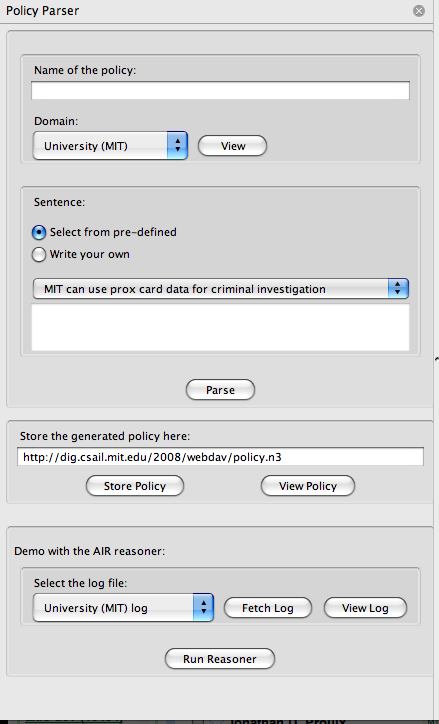

We have developed a Firefox sidebar extension which lets you write
a constrained natural language sentence and parse it. You can download
it from:
http://justparseit.googlecode.com/files/PolicyParser.xpi
Once it is installed on Firefox you can activate it by selecting "View -> Sidebar -> Policy Parser".
The sidebar will display as follows:

Figure: Policy Parser Firefox Sidebar
First of all the user will have to specify a name for the policy that she intends to create.